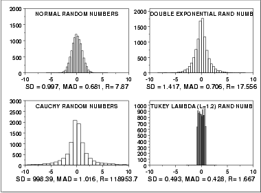

|
1.
Exploratory Data Analysis
1.3. EDA Techniques 1.3.5. Quantitative Techniques
|
|||
| Scale, Variability, or Spread |
A fundamental task in many statistical analyses is to characterize
the spread, or variability, of a data set. Measures of scale
are simply attempts to estimate this variability.
When assessing the variability of a data set, there are two key components:
The histogram is an effective graphical technique for showing both of these components of the spread. |
||
| Definitions of Variability |
For univariate data, there are several common numerical measures of
the spread:
|
||
| Why Different Measures? |
The following example helps to clarify why these alternative
defintions of spread are useful and necessary.
This plot shows histograms for 10,000 random numbers generated from a normal, a double exponential, a Cauchy, and a Tukey-Lambda distribution. 
| ||
| Normal Distribution |
The first histogram is a sample from a
normal distribution. The
standard deviation is 0.997, the median absolute deviation is
0.681, and the range is 7.87.
The normal distribution is a symmetric distribution with well-behaved tails and a single peak at the center of the distribution. By symmetric, we mean that the distribution can be folded about an axis so that the two sides coincide. That is, it behaves the same to the left and right of some center point. In this case, the median absolute deviation is a bit less than the standard deviation due to the downweighting of the tails. The range of a little less than 8 indicates the extreme values fall within about 4 standard deviations of the mean. If a histogram or normal probability plot indicates that your data are approximated well by a normal distribution, then it is reasonable to use the standard deviation as the spread estimator. |
||
| Double Exponential Distribution |
The second histogram is a sample from a
double exponential distribution.
The standard deviation is 1.417, the median absolute
deviation is 0.706, and the range is 17.556.
Comparing the double exponential and the normal histograms shows that the double exponential has a stronger peak at the center, decays more rapidly near the center, and has much longer tails. Due to the longer tails, the standard deviation tends to be inflated compared to the normal. On the other hand, the median absolute deviation is only slightly larger than it is for the normal data. The longer tails are clearly reflected in the value of the range, which shows that the extremes fall about 6 standard deviations from the mean compared to about 4 for the normal data. |
||
| Cauchy Distribution |
The third histogram is a sample from a
Cauchy distribution. The
standard deviation is 998.389, the median absolute deviation is
1.16, and the range is 118,953.6.
The Cauchy distribution is a symmetric distribution with heavy tails and a single peak at the center of the distribution. The Cauchy distribution has the interesting property that collecting more data does not provide a more accurate estimate for the mean or standard deviation. That is, the sampling distribution of the means and standard deviation are equivalent to the sampling distribution of the original data. That means that for the Cauchy distribution the standard deviation is useless as a measure of the spread. From the histogram, it is clear that just about all the data are between about -5 and 5. However, a few very extreme values cause both the standard deviation and range to be extremely large. However, the median absolute deviation is only slightly larger than it is for the normal distribution. In this case, the median absolute deviation is clearly the better measure of spread. Although the Cauchy distribution is an extreme case, it does illustrate the importance of heavy tails in measuring the spread. Extreme values in the tails can distort the standard deviation. However, these extreme values do not distort the median absolute deviation since the median absolute deviation is based on ranks. In general, for data with extreme values in the tails, the median absolute deviation or interquartile range can provide a more stable estimate of spread than the standard deviation. |
||
| Tukey-Lambda Distribution |
The fourth histogram is a sample from a
Tukey lambda distribution with
shape parameter
λ = 1.2. The standard deviation is 0.49, the median
absolute deviation is 0.427, and the range is 1.666.
The Tukey lambda distribution has a range limited to (-1/λ,1/λ). That is, it has truncated tails. In this case the standard deviation and median absolute deviation have closer values than for the other three examples which have significant tails. |
||
| Robustness |
Tukey and Mosteller defined two types of robustness where robustness is a lack of susceptibility to the effects of nonnormality.
The median absolute deviation and the interquartile range are estimates of scale that have robustness of validity. However, they are not particularly strong for robustness of efficiency. If histograms and probability plots indicate that your data are in fact reasonably approximated by a normal distribution, then it makes sense to use the standard deviation as the estimate of scale. However, if your data are not normal, and in particular if there are long tails, then using an alternative measure such as the median absolute deviation, average absolute deviation, or interquartile range makes sense. The range is used in some applications, such as quality control, for its simplicity. In addition, comparing the range to the standard deviation gives an indication of the spread of the data in the tails. Since the range is determined by the two most extreme points in the data set, we should be cautious about its use for large values of N. Tukey and Mosteller give a scale estimator that has both robustness of validity and robustness of efficiency. However, it is more complicated and we do not give the formula here. |
||
| Software | Most general purpose statistical software programs can generate at least some of the measures of scale discusssed above. | ||